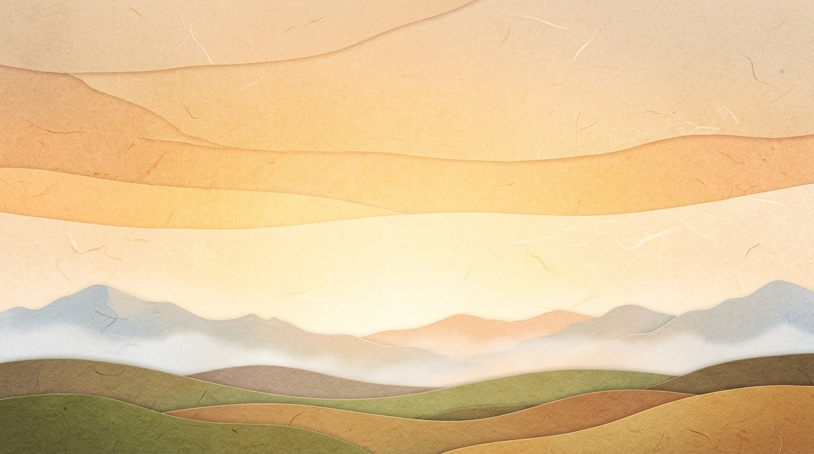
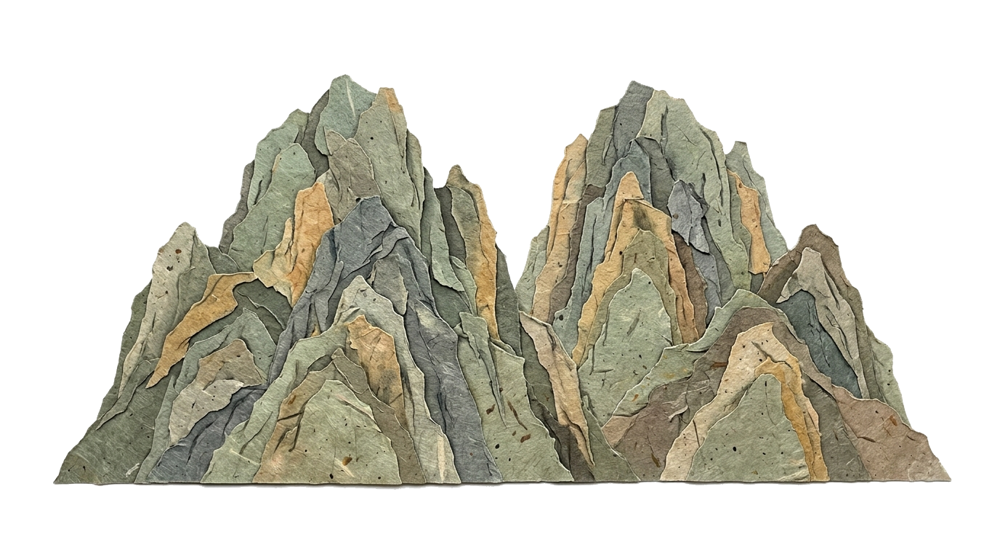
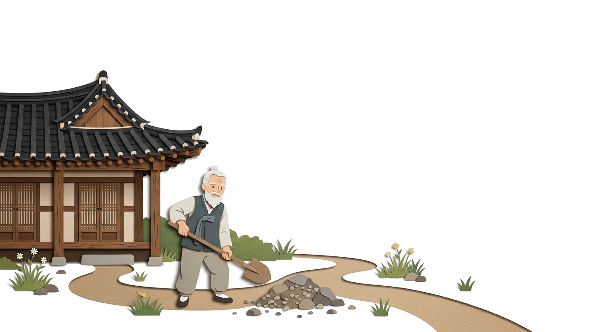
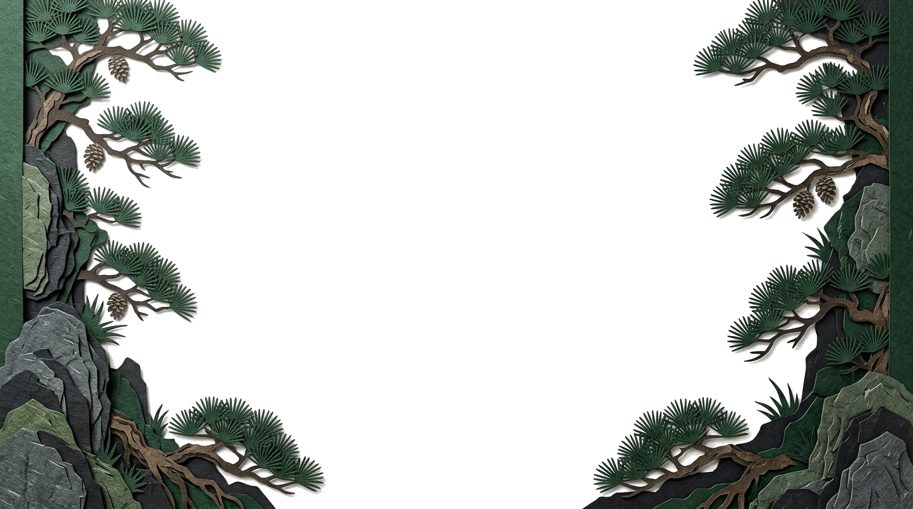

🎬 종이 극장 쇼츠
00:00 / 00:24
우공이산 (愚公移山)
넘기지 않고 한 편의 짧은 이야기처럼 자동으로 이어집니다




제1장 · 거대한 산
옛날 아흔 살 우공 할아버지 집 앞에는 너무 큰 두 산이 가로막고 있었어요.
愚어리석을 우
公공 공 (할아버지)
移옮길 이
山뫼 산
⚫ 바둑 속 지혜: 처음엔 바둑판이 넓고 불리해 보여도, 포기하지 않고 한 수 한 수 정성을 다해 두면 결국 승리의 길을 열 수 있어요!
💡 확인 퀴즈: ‘우공이산’이 가르쳐 주는 가장 중요한 마음가짐은 무엇일까요?